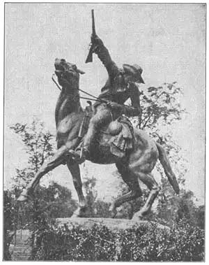

58
WOMEN’S WORK
女雕刻家的作品

MEN have made so many good statues that there isn’t room in one book to tell you about them all. Perhaps you notice that I said men have made so many good statues. What about women? It is true that all the statues that I have told you about so far have been made by men. Until recently women have not been good sculptors. Generally they have not been good sculptors because they have not been sculptors at all—until recently.
The first person to make portrait statues in America was a woman whose name is now unimportant. Her portrait statues were very lifelike. They were made of wax and colored to look like real people and were just the same size as real people. She even dressed them in real clothes just like the wax figures. And then later a Madame Tussaud made the same king of wax figures of people famous in history Madame Tussaud’s Waxworks are in London and you can go there and see such men as Napoleon and Theodore Roosevelt and Marshal Foch all looking so lifelike that they really seem ready to speak.
But waxworks aren’t considered really truly sculpture, any more than a colored photograph is considered a really truly painting. After the early waxworks more and more women studied to be sculptors, especially in the United States, until now we have women sculptors who are just as good as men sculptors and so many of them that I can’t begin to tell you about all of them. There is room for only two, I’m sorry to say, in this chapter.
One of these two is Mrs. Anna Hyatt Huntington. Mrs. Huntington has two favorite subjects for her statues. She is famous for her animal statues and for her Joan of Arc statues. The statue below combines both subjects. It is of Joan of Arc on a horse. Some people who write about art (they are called art critics) say that this statue of Joan of Arc is the best Joan of Arc statue that any one has ever made. Most statues of Joan of Arc show her as too old or too big or too grown-up looking. Joan of Arc was only seventeen when she led the French armies against their enemies. In Mrs. Huntington’s statue Joan looks only seventeen. Then again, people who know about the kind of armor worn in the time of Joan of Arc say that Mrs. Huntington is the first sculptor to put exactly the right armor and equipment on Joan and on Joan’s horse.
Perhaps you think the horse is too big for Joan. But probably it’s more nearly the kind of horse the real Joan rode, than a smaller one would be. I told you war-horses had to be big and strong to carry the men in armor and to charge through the enemy and it’s very likely that when Joan took command of the army she was given a man’s warhorse to ride. Before fire engines became automobiles they used to be pulled by large and beautiful horses. The horse that Mrs. Huntington used as a model for her statue was a fire engine horse in Gloucester, Massachusetts.
The Huntington Joan of Arc stands on Riverside Drive in New York City. Do you like it as well as Frémiet’s Joan of Arc? I like it better.
The other woman sculptor I want you to know is Gertrude Vanderbilt Whitney. Mrs. Whitney won the competition for a monument in memory of the people who were drowned when the Titanic sank. The Titanic was a great new ocean liner. On her first trip across the Atlantic she ran upon an iceberg and tore a hole in her bottom. She sank before other ships could reach her and more than fifteen hundred people were lost. The memorial designed by Mrs. Whitney shows a human figure standing erect with arms outstretched like cross. It was made to be placed in Washington, D. C.
And now for Buffalo Bill! Yes, the famous Buffalo Bill, the daring Western scout, has an equestrian statue in his honor. Buffalo Bill’s real name was William Cody, Colonel William Cody later, and the statue of Buffalo Bill stands in the little town of Cody, Wyoming, which Buffalo Bill founded. The statue, made by Mrs. Whitney, shows Buffalo Bill looking down into a valley signaling with his rifle to the wagon train that he is guiding through the Indian country. Where the statue stands in Cody, however, there is no valley right below and so perhaps Buffalo Bill is looking at the hoof prints of an Indian war party on the trail beside him. Maybe you prefer to think of him as looking at still something else.

No.58-2 BUFFALO BILL（《巴法罗·比尔》） WHITNEY（惠特尼 制）
Photograph by Ewing Galloway
It’s a very good statue. The horse was modeled from one of Buffalo Bill’s own horses.
But though I’ve mentioned only two women sculptors, remember there are many more women who are making excellent statues, especially in the United States.
【中文阅读】
男人制作了许多很棒的雕刻，但本书限于篇幅无法对他们一一都做介绍。可能你已经注意到了，我说“男人”创作了很多很好的雕像。那么，女人怎么样呢？的确，我之前介绍的所有雕像都是出自男雕刻家之手。女雕刻家直到最近才崭露头角。她们一般称不上是优秀的雕刻家，因为她们直到最近才成为真正意义上的雕刻家。
在美国，雕刻半身像的第一人正是一位女性，她姓谁名谁并不重要。她的半身像刻得栩栩如生。它们用蜡雕成，上色后看起来就像真人一样，而且同真人一般大小。这位女性甚至给蜡像穿上衣服，就像服装店里的蜡像一样。后来，杜莎夫人开始 为历史名人制作同样的蜡像。杜莎夫人的蜡像馆如今设在伦敦。如果有机会去那儿的话，就会看到拿破仑、西奥多·罗斯福、福熙元帅等人的蜡像。这些蜡像看起来惟妙惟肖，仿佛要跟你说话。
不过，人们一般不把蜡像看作真正的雕刻，就像他们认为彩色照片并不属于真正意义上的绘画一样。早期的蜡像问世后，越来越多的女性开始学习雕刻艺术。这股风潮在美国尤为显著，所以现在我们有了女雕刻家，她们同男雕刻家一样出众。我不可能将她们都做介绍，因为她们也是人数众多。遗憾地说，本章只能介绍她们其中的两位。
一位是安娜·海厄特·亨廷顿夫人。亨廷顿夫人最喜欢创作两个主题的雕像：动物雕像和圣女贞德像，她最著名的雕像也是这两类主题。下图的雕像就包含了这两个主题。我们来看圣女贞德骑马像。一些艺术评论者（也称艺术批评家）认为这是所有圣女贞德像中最好的，因为大部分雕像把圣女贞德刻得要么太老，要么太大，要么太成熟。事实上，她在率领法军抗敌时才17岁。但在亨廷顿夫人刻的圣女贞德雕像上，贞德看起来也就17岁。接着，又有知道当时盔甲穿戴方式的人，称亨廷顿夫人是第一位给圣女贞德和她的战马佩戴正确武器装备的雕刻家。
你可能会觉得，对贞德来说，这匹马刻得实在是太大了。但是，有可能刻大马比刻小马更接近当年贞德的坐骑。我说过，战马必须高大强壮，这样它们才能承受住身披盔甲的将士们，才能在敌军的阵营中驰骋。事实上，很有可能贞德在指挥军队时骑的就是男人跨的战马。在救火马车变成消防汽车之前，它们通常都由健美而高大的马拉着走。而亨廷顿夫人用作雕像模特的马正是马萨诸塞州格洛斯特拉救火车的马。
亨廷顿的《圣女贞德》竖立在纽约市的河滨大道上。你会像喜欢弗莱米耶的《圣女贞德》一样喜欢这座雕像吗？我更喜欢亨廷顿的圣女贞德像。
我要介绍的另一位女雕刻家是葛楚·范德伯尔特·惠特尼。人们要为在“泰坦尼克号”沉船事故中的罹难者修建一座纪念碑，惠特尼夫人竞标中胜。“泰坦尼克号”是一艘大而新的远洋班轮。它在穿越大西洋的处女航中不幸撞上冰山，船底划出了一个大口子。在救援船到达之前，“泰坦尼克号”沉入海底，共有一千五百多人在此次事故中丧生。惠特尼夫人设计的纪念碑展示了一个人笔直地站着，两只手臂伸展开呈十字架状。这座纪念碑专为华盛顿特区而设立。
我们接下来聊聊巴法罗·比尔吧。是的，巴法罗·比尔以勇猛著称。他是西部的一名侦察兵。为了纪念他，人们为他刻了一座骑马像。巴法罗·比尔原名威廉·科迪，后来人称威廉·科迪上校。如今巴法罗·比尔的骑马像竖立在怀俄明州科迪小镇上。这个小镇是巴法罗·比尔建立的。惠特尼夫人制作的这座雕像使我们看到，巴法罗·比尔俯视着山谷，用步枪鸣响信号，指挥马车队穿越印第安部落。其实在这座位于科迪的雕像底下并没有什么山谷，所以巴法罗·比尔可能正俯视旁边小径上印第安军队狂欢后留下的足印。或许你认为他是在看一些其他事物。
这的确是一座很棒的雕像。这马正是以巴法罗·比尔的坐骑为原型的。
不过，尽管我在本章只提及了两位女雕刻家，但请记住，还有更多的女性雕刻家正在制作精美的雕像，尤其在美国。